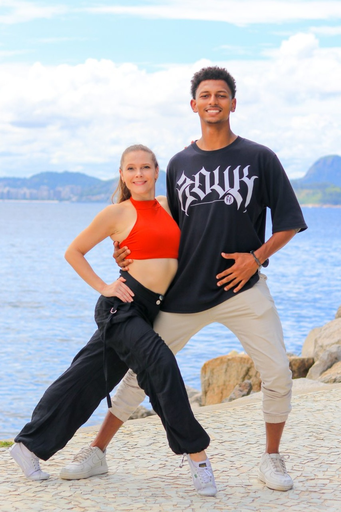
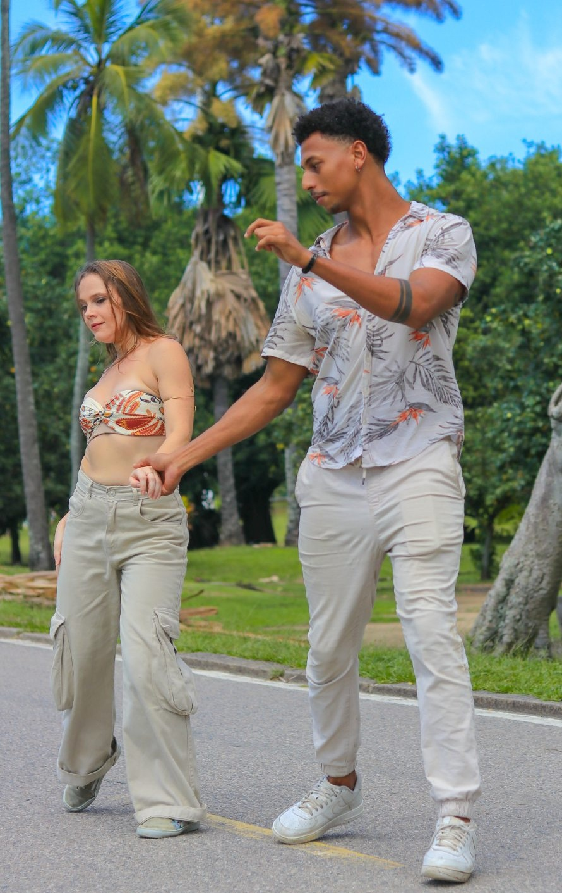
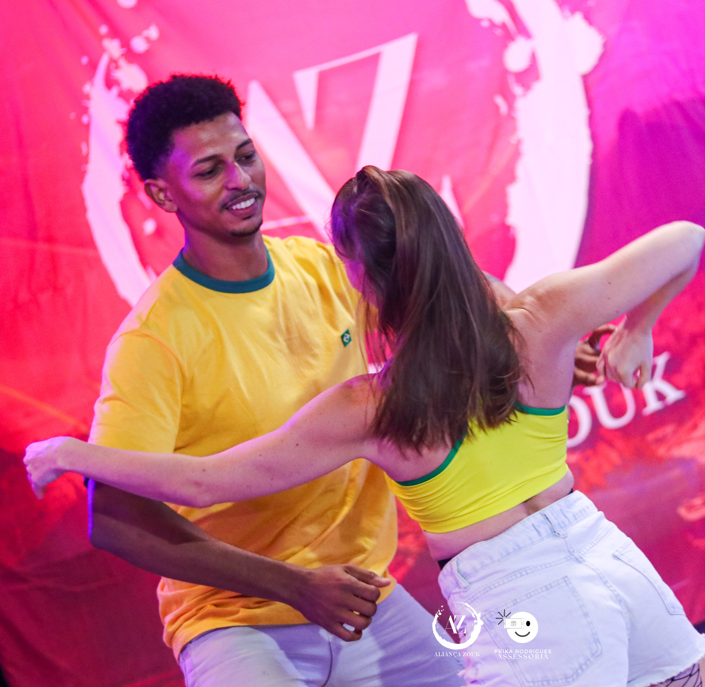
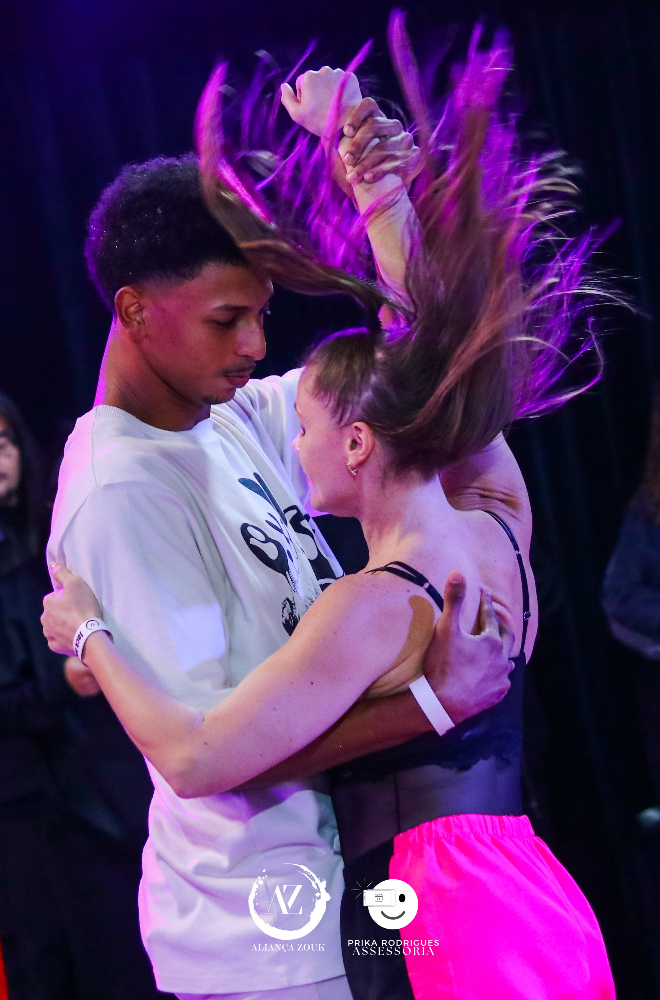
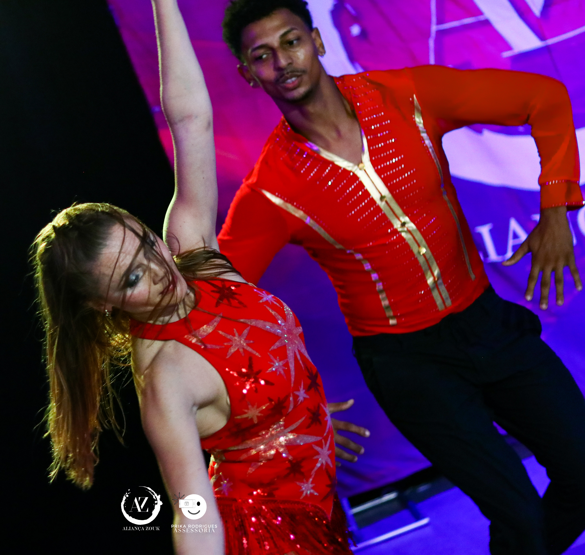

Disponíveis para workshops, aulas particulares e shows.

Nossa proposta
Nossa filosofia
Transformando os primeiros passos em uma experiência positiva
Acreditamos que aprender Zouk é um processo construído passo a passo.
Como professores, buscamos explicar os fundamentos de forma simples e organizada, oferecendo orientações claras e feedback para que cada aluno possa desenvolver confiança no próprio aprendizado.
Valorizamos uma sala de aula onde as pessoas se sintam respeitadas, apoiadas e motivadas a continuar evoluindo, independentemente da idade ou da experiência anterior com dança. Queremos também que esse aprendizado ajude cada aluno a ganhar confiança para participar dos bailes, conhecer novas pessoas e fazer parte da comunidade de Zouk no Rio de Janeiro.
01
Aprender com clareza
Fundamentos apresentados de forma simples, progressiva e acessível.

02
Evoluir com confiança
Feedback e incentivo para que cada aluno reconheça seus próprios avanços.
03
Dançar com conexão
Sentir o próprio corpo, ouvir e responder ao parceiro e descobrir a comunidade que existe além da sala de aula.
04
Descobrir o prazer de dançar
Mais do que aprender passos, desenvolver consciência corporal, musicalidade e prazer em dançar em dupla — na sala de aula e nos bailes.
Como acontece a aula?
01
Início
Acolhimento · aquecimento · apresentação do conteúdo
02
Ensino e Prática
Explicação · demonstração · troca de pares · correções e feedback
03
Final
Revisão · próximos passos
“Queremos que o aluno saia da aula sentindo que aprendeu algo novo — e com vontade de voltar.”

Quem são
Gabriel & Liza Professores • Dançarinos • Parceiros de dança
Uma parceria que reúne diferentes trajetórias na dança, incluindo ensino, apresentações, competições e dança social, e uma experiência compartilhada no Zouk Brasileiro no Rio de Janeiro.
Liza
Professora • Bailarina • Educadora
+25 anos de trajetória na dança
Experiência internacional em Zouk Brasileiro, Ballet, Dança de Salão, Danças Latinas, Danças Urbanas, Yoga e Pilates.
Formação e experiência
Formação professores de Zouk — MAC | 2025
Professora de turma de Zouk — Centro Cultural Sotaques | 2025-26
Professora de workshops — Rio Zouk Immersion | 2025
Professora de Ballet e de Dança de Salão — EUA
Idiomas Português · Inglês · Russo · Espanhol
Gabriel
Professor • Dançarino
+10 anos de trajetória na dança
Experiência em Zouk Brasileiro, Dança de Salão, Contemporâneo e Danças Urbanas.
Formação e experiência
Formação professores de Zouk — MAC | 2026
Dançarino de Dança de Salão — 7 anos
Dançarino de ficha na Dança de Salão — 5 anos
Idiomas Português · Inglês
Nossa trajetória juntos no Zouk Brasileiro
Formação → comunidade → apresentações → aulas → competições
Formação & comunidade
Participação no Time RAIZ — Rafael Oliveira & Izabel Ramos
Estudos de Zouk e Lambada com Carlos de Oliveira, Renata Peçanha, Jotta, Irla Carina, Rhawann & Ingrid e Hudson Alexandre
Participação ativa em eventos e bailes da comunidade Zouk no Rio
Participação em congressos de Zouk pelo Brasil
Experiência como dupla
Apresentação de coreografia de casal — Aliança Zouk 2026
Apresentação de coreografia de quarteto — Zouk in Rio 2025 e Aliança Zouk 2025
Professores de aulas particulares de Zouk
Organização e liderança de treinos de Zouk no RJ


Jack & Jill — Intermediário
Liza
1º Aliança Zouk 2026 ・ 2º Aliança Zouk 2025 ・ 2º Zouk Hour 2025 ・ 3º Zouk in Rio 2025
Gabriel
Competindo atualmente no nível Intermediário
Jack & Jill — Novice
Gabriel
1º Aliança Zouk 2025 ・ 2º Zouk Hour 2025
Combatchy
2º lugar — 2026 | Profissional 3º lugar — 2025 | Profissional/Semiprofissional